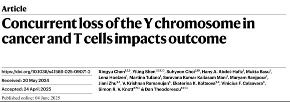
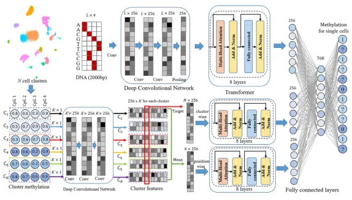
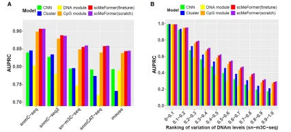
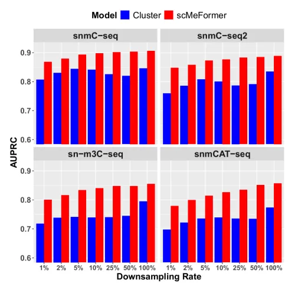
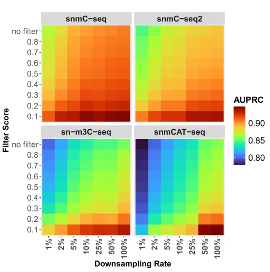
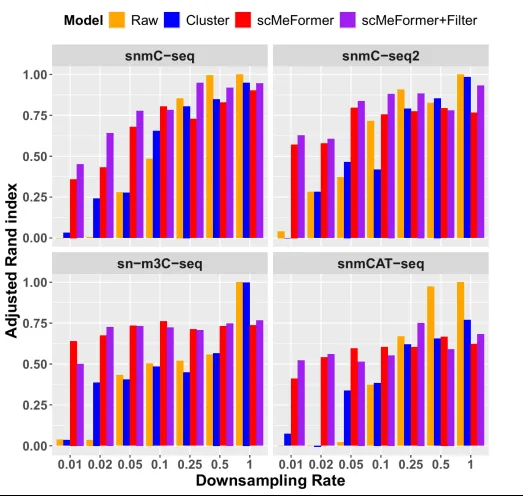
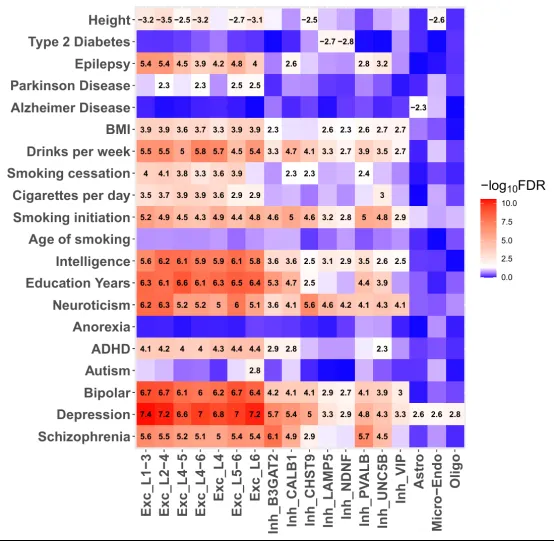
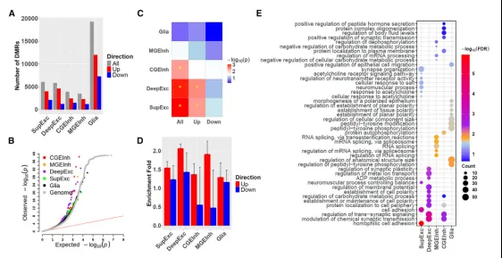

《Cell Genomics》|单细胞甲基化scMeFormer深度学习模型解析精神分裂症表观遗传改变
原文：https://mp.weixin.qq.com/s?__biz=MzAwMzIzOTk5OQ==&mid=2247529614&idx=1&sn=c943647fdabe66c23af2bb51af02da19&chksm=9b3c0ddeac4b84c80470f9591807b92a6017e8fefa44c83b51fccc4917708cb4082c3312a3b4#rd 合集：文献速递
一、写在前面
本次分享的是《Cell Genomics》（IF=9.0）“Deep learning imputes DNA methylation states insingle cells and enhances the detection ofepigenetic alterations in schizophrenia”DOI:10.1016/j.xgen.2025.100774

****DNA 甲基化是一种基本的表观遗传机制，它在基因调控、哺乳动物发育以及多种人类疾病中起着关键作用。随着单细胞技术的发展，研究者们可以在单细胞分辨率下，分析DNA序列中胞嘧啶处的甲基化状态。但由于单个细胞中可用的DNA序列有限以及技术本身的限制，通常对CpG位点的覆盖度很低，这限制了它们在单细胞分辨率下揭示表观遗传景观的潜力。
这篇文章中，作者介绍了一种基于Transformer架构开发的深度学习模型——scMeFormer，它能够在多任务预测框架内高效地填补每个CpG位点的DNA甲基化（DNAm）状态。该模型能够利用来自局部DNA序列和细胞间DNAm谱的信息，覆盖了数千个单细胞，并且作者还将其应用于精神分裂疾病的研究中，从而增强对精神分裂症患者表观遗传改变的检测。
如果需要数据分析指导 、生信热点全文复现 、自测数据个性化分析 辅导、常态化实验学习，欢迎联系客服微信[Biomamba_zhushou]
二、主要结果
scMeFormer模型由两个主要模块组成：DNA 模块和CpG模块（Fig. 1）。DNA 模块用于学习 DNA甲基化（DNAm）的模式（motifs），包含一个卷积神经网络（ CNN）模块，用于提取局部DNA特征；随后是八层Transformer模块，用于检测可能协同影响DNAm的远端特征；CpG 模块能够利用细胞内和细胞簇间相邻 CpG位点的DNAm信息**，**包含一个 CNN模块，用于提取每个细胞簇内相邻CpG位点的局部模式；随后是两个独立的Transformer模块，用于捕捉CpG位点之间以及细胞簇之间的DNAm关系。

Fig.1****
之后作者在五个不同的单核 DNAm数据集上进行了测试，使用精密度-召回曲线下的平均面积（AUPRC）评估模型性能。首先探讨每个模块对 scMeFormer整体性能的贡献。单独使用CpG或DNA模块都会降低预测性能，说明这两个模块在整个模型中缺一不可（Fig. 2A），此外，与CNN和Cluster模型比较的结果显示，采用预训练-微调策略的scMeFormer模型性能最佳（Fig. 2B）。

Fig.2
之后作者比较了两种模型（scMeFormer 和 cluster）在预测 CpG 位点甲基化状态或其他相关属性时的性能。结果显示即使在 CpG 覆盖率极低（1%）的情况下，两个模型都表现良好，但scMeFormer 的性能优于 cluster 模型（Fig. 3）。

Fig.3
接下来，作者定义了一个插补质量分数指标来评估单个CpG位点的插补质量。该指标计算目标CpG位点与其前后五个相邻CpG位点的预测结果的平均绝对差值。分别设置不同的分值阈值，并仅保留低于该阈值的CpG位点，结果显示严格的过滤阈值能够显著提升预测性能 （Fig. 4）。

Fig.4
除此之外，作者比较了不同处理方法（无填补、cluster 模型填补、scMeFormer 填补以及带有过滤的 scMeFormer 填补）在恢复原始数据中细胞类型聚类方面的能力，使用调整 Rand 指数（Adjusted Rand Index, ARI）来衡量从原始数据中获得的细胞类型聚类与从处理后的数据（下采样、填补、过滤）中获得的聚类之间的相似性。结果显示过滤方法（基于填补质量评分）有效提升了 scMeFormer 的性能，进一步证明了其在填补数据中的可靠性和准确性（Fig. 5）。

Fig.5****
接下来 使用填补后的 sn-m3C-seq 数据集，应用过滤评分（filtering score）为 0.3 的过滤条件，分析特定细胞类型（神经元细胞类型和非神经元细胞类型）的 DMRs，同时对这些 DMRs 进行遗传力富集分析，评估它们与多种性状和疾病（包括大脑相关性状、疾病、身高和糖尿病）之间的关联。结果显示神经元细胞类型特异的 DMRs 与大脑相关性状和疾病（如神经退行性疾病、精神疾病等）有显著关联，但与身高或糖尿病等非大脑相关性状无关，这表明神经元细胞类型的 DNA 甲基化状态可能在大脑功能和疾病发生中起关键作用（ Fig. 6）。

Fig.6
最后，作者关注了精神分裂症（Schizophrenia, SCZ）相关DMRs。在插补前，未检测到任何DMRs，而插补后，在五种细胞类型中均检测到DMRs，且上调DMRs数量远超下调DMRs（Fig. 7A-B），之后作者分析了DMRs 内或附近（5 kb 范围内）的单核苷酸多态性（SNPs）与 SCZ 全基因组关联研究（GWAS）信号之间的关联，使用MAGMA 软件进行基因集分析，以确定这些目标基因是否富集 SCZGWAS 信号（Fig. 7C），结果发现这些 DMR相关基因富集于突触信号通路，主要集中在兴奋性神经元中，进一步证明了兴奋性神经元在SCZ发病机制中的核心作用（Fig. 7D-E）。

Fig.7
三、总结讨论
该研究开发了一种基于Transformer的深度学习模型——scMeFormer，能够填补单细胞 DNAm 数据中的缺失值，并在低覆盖率情况下保持高保真度。其模块化架构和迁移学习能力使其不仅适用于 DNAm 数据，还具有在其他单细胞组学数据中应用的潜力，有望成为单细胞组学研究中的一个通用工具。

如何联系我们

 留一个领取资料、免费两周学习版服务器的微信号[Biomamba_zhushou]，方便各位随时交流。同时我们也构建了交流群矩阵，欢迎大家入群讨论。
大家可以阅读完这几篇之后添加给生信入门初学者的小贴士
没有检索，就没有发言权
留一个领取资料、免费两周学习版服务器的微信号[Biomamba_zhushou]，方便各位随时交流。同时我们也构建了交流群矩阵，欢迎大家入群讨论。
大家可以阅读完这几篇之后添加给生信入门初学者的小贴士
没有检索，就没有发言权
已有生信基地联系方式的同学无需重复添加

 您点的每个赞和在看，我都认真当成了喜欢
您点的每个赞和在看，我都认真当成了喜欢